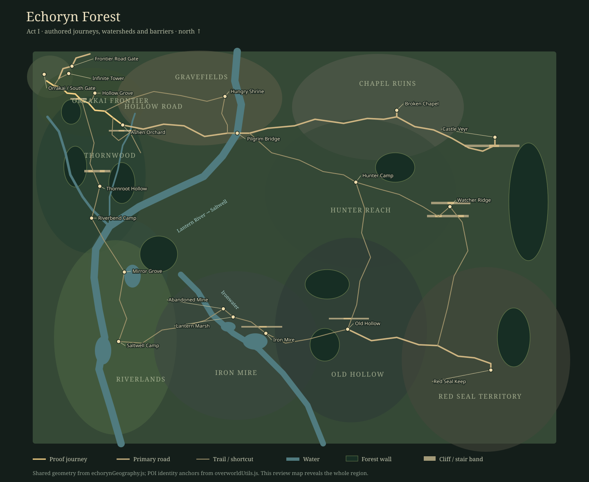

Echoryn Forest
Act I now follows authored roads, rivers, terraces and forest barriers. These captures show the actual game renderer with text labels suppressed. Click a screenshot to inspect it.
The geographic plan

Regional identity
Closer inspection
The master plan deliberately reveals the entire region for review. In the game, survey fog and undiscovered location filtering remain active. The field review page saves no profiles; use WASD, the scene menu and Walk Hollow Road.